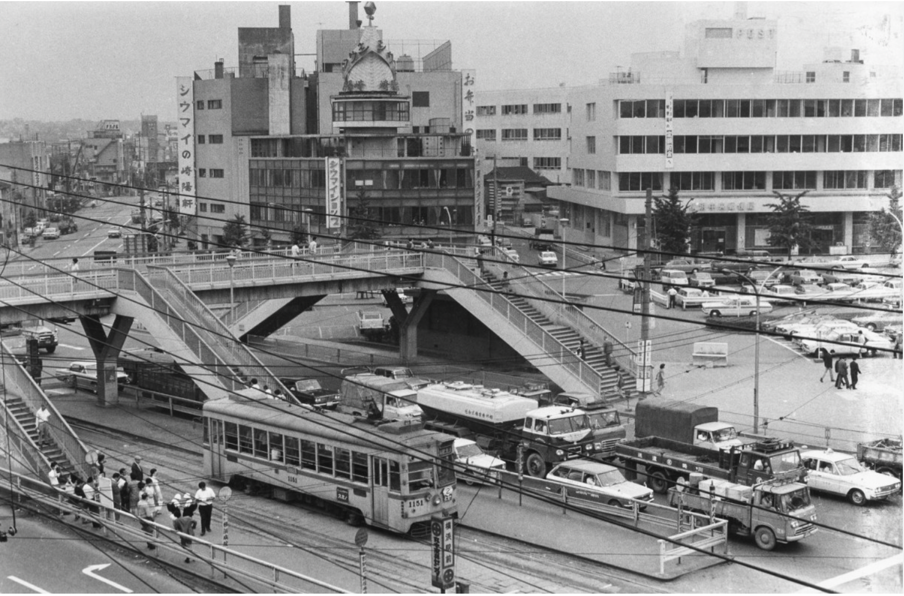
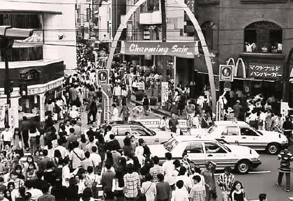
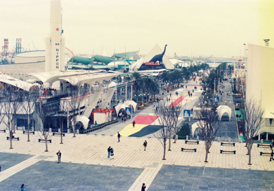
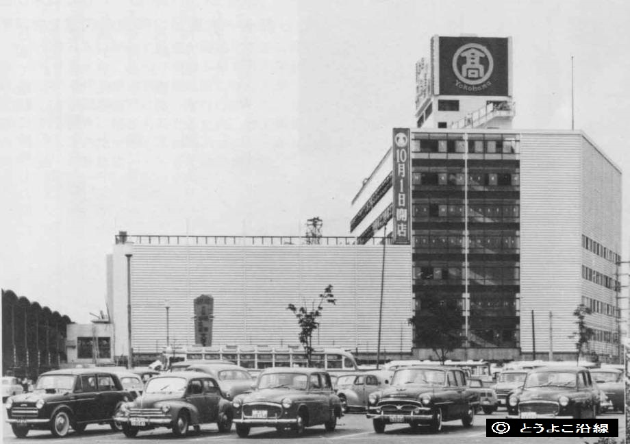
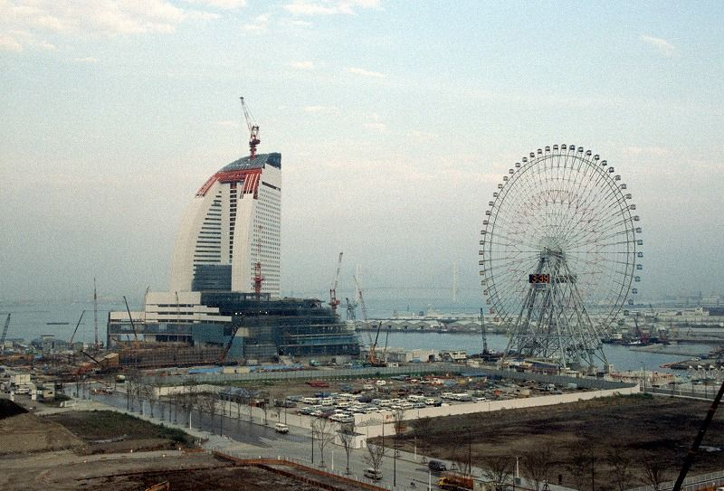
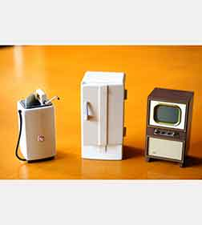
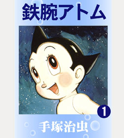

第9回 シルバー世代インタビュー
今回は、12/6のシルバー世代インタビューに向けて、質問、および質問に関連した記憶装置を10点ずつ提示していきます。
(今回、インタビューさせていただく方は、ここでは「〜さん」と呼称させていただきます。)
1.質問
Q1. 横浜が今のように発展し始めたのはいつからですか？
Q2. 〜さんが幼少期・学生時代を過ごしていた当時の横浜はどんな様子でしたか？
Q3. 〜さんが学生時代に周りで流行していたもの、人気だった人などはありますか？
Q4. 2021年に2回目の東京オリンピックが開催されましたが、1964年の第１回大会と比べてどうでしたか？
Q5. 横浜で過ごした頃の一番の思い出はなんですか？
Q6. 横浜から今住んでいる地に移り住んだきっかけはなんですか？
Q7. 当時、故郷を恋しくなったことはありましたか？あれば、そのエピソードを教えていただけませんか？
Q8. 今の横浜のいいところ・悪いところはどこですか？
Q9. 過去に戻ってみたいですか？戻ってみたいなら、いつに戻りたいですか？
Q10. これからの横浜にどうあって欲しいですか？
2.記憶装置






